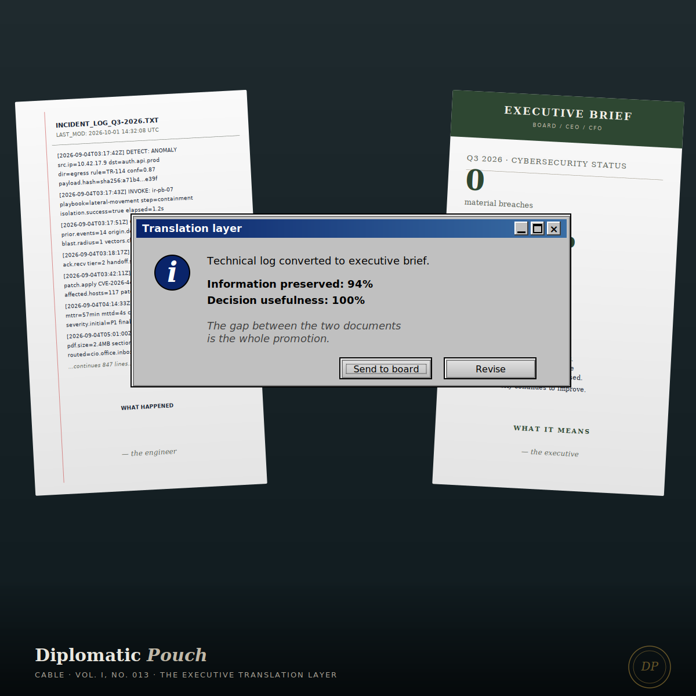

The Executive Translation Layer
On the gap between the technical win and the executive hearing it — and why the gap is the whole promotion.

I want to describe a scene that I have watched play out, in slightly different forms, in every organization I have worked security for. The scene goes like this. A security engineer has just solved a hard problem. The solve is elegant. It eliminated a specific class of vulnerability, it did so without disrupting production, and the engineer is rightly proud. The engineer briefs leadership. The brief contains the correct technical language. The engineer uses words like 'reconfigured the identity federation plane' and 'rotated the key material through the hardware security module' and 'enforced the control at the ingress gateway rather than the egress endpoint.' The engineer is being precise. The engineer is being accurate.
The CFO glazes over at word four. The CEO is checking her phone by minute two. The chief legal officer is politely waiting for a conclusion that she can map to a risk register. At the end of the brief, someone — usually the CIO — leans over and says, 'Can you have someone put together a one-page summary of what he actually did?'
The engineer walks out of the room feeling dismissed. The engineer is not wrong. The engineer was dismissed. But the dismissal did not happen because the leadership was stupid or dismissive by nature. The dismissal happened because the engineer sent a payload that the recipient's parser could not decode.
Communication as a protocol problem
Here is the frame that reorganized my own thinking on this and that I now give every security engineer I mentor. Executive communication is a protocol problem, not a performance problem. You are not failing to be charismatic. You are failing to serialize your data into a format the recipient's runtime can execute.
The CFO's runtime executes on three things: dollars, time, and risk-adjusted outcomes. The CEO's runtime executes on strategic posture and competitive position. The chief legal officer's runtime executes on exposure, obligation, and the shape of what has to be disclosed. None of these runtimes natively parse 'reconfigured the identity federation plane.' That string is syntactically correct. It is semantically opaque. The recipient's interpreter raises an exception, and because the recipient is a senior executive, the exception is handled silently by moving on.
This is not a failure of your technical work. It is a failure of serialization. The work was good. The transport layer broke.
Executive communication is a protocol problem, not a performance problem.
The format the runtimes actually accept
Every executive runtime I have observed, across government and private sector and now global enterprise, accepts the same three-field message format. Learn to serialize into this format and you will stop being dismissed.
Field one: the business outcome. One sentence. Not what you did. What the organization now has, or no longer has, as a result of what you did. 'We removed the ability for an attacker who compromises a single developer laptop to pivot to our production customer data.' That is a business outcome. It is a statement about the organization's exposure, not a statement about your code. If you cannot write one sentence of that shape about your work, your work was either not valuable or you do not yet understand what you did.
Field two: the risk-adjusted comparison. One sentence that places this outcome against the status quo. 'Before this change, that pivot path was the second-ranked risk on our quarterly report. After this change, it is no longer in the top ten.' Executives think in deltas. They need to know whether your work moved a needle they already have on their dashboard, not whether you built something they will have to learn to appreciate.
Field three: the cost of the alternative. One sentence. 'The next-best alternative was a project the vendor quoted at $400,000 and six months; we achieved the same outcome with internal effort in four weeks.' Or: 'If we had not done this, the nearest-equivalent incident at a peer firm last year cost them an estimated $12M in incident response and brand remediation.' Field three gives the executive the number they need to defend your work when someone else asks them why security got the budget it got.
Three fields. Three sentences. Lead the brief with all three, in that order, before you say anything else. The technical detail goes in an appendix that no one reads but that proves to the inevitable auditor that the work was real.
Why security engineers resist this
The pushback I get from technically strong engineers when I give them this framing is almost always some version of the same objection. 'That is not what I actually did. That is a reduction of the work. The actual work is more complex than those three sentences. If I lead with the three sentences, I am dumbing it down.'
I want to name what is actually underneath that objection, because I have made it myself. The objection is not really about accuracy. The objection is about identity. The engineer has spent a decade earning the right to use the precise vocabulary. The precise vocabulary is the mark of the tribe. Translating out of it feels like a betrayal of the tribe and a surrender to the people who did not do the hard thing. I understand that feeling because I spent the first eight years of my career performing it.
What I did not understand then and now do is that the executive translation layer is not a dumbing-down of the work. It is a different piece of work. The technical solve is the first piece. The business framing of the solve is the second piece. The second piece is exactly as difficult as the first, requires exactly as much skill, and is where technically credentialed people who do not develop it hit a career ceiling they then spend the next ten years blaming on politics.
The politics are real. But the ceiling is not politics. The ceiling is that you did half the job and left the other half to someone less technically capable than you to translate for you, and the translation that reached the executives was never as faithful as the one you could have delivered yourself.
What this looks like in practice
Three practical disciplines, drawn from what I have watched work and what has worked for me.
Write the three sentences before you build the deck. Not after. Before. If you cannot write them before, you do not yet understand your own work well enough to present it. The deck is a visualization of the three sentences; the three sentences are the artifact. If you build the deck first and try to extract the three sentences at the end, you will produce three sentences that describe the deck rather than three sentences that describe the business outcome. The order matters.
Rehearse the brief against a non-technical listener before you give it live. My wife has sat through more cybersecurity briefs than any non-practitioner should ever have to endure. The questions she asks are the questions a CFO asks. The places she glazes over are the places your CEO will glaze over. Non-technical listeners are a free integration test for your serialization. Use them. If the person who loves you cannot follow the brief, the person who signs your paycheck definitely cannot.
When an executive asks a question you consider stupid, assume the serialization broke, not the executive. The default move for technically capable people is to conclude that the question was dumb. The actual move is to conclude that the question reveals which field of your three-sentence protocol did not land. Diagnose the serialization failure, not the recipient. You will learn more from the question than from a hundred compliments.
The structural piece
I want to connect this to a structural argument I have made elsewhere in this publication. In the Cable on reporting lines, I made the case that a CISO reporting to the CIO is a structural error, because the mandate of the two roles is in necessary tension and collapsing them under a single reporting chain produces compromised defense. That argument stands. But the structural argument has a human-layer companion that this Cable is trying to make. Even if your reporting line is structurally correct — even if you report to the CEO or the board or an independent risk officer — the authority of the line is only usable if you can serialize your work into the format the line can read.
I have watched structurally-correct CISO positions get wasted because the person in the seat could not translate. I have watched structurally-compromised positions get leveraged into real influence because the person in the seat was a translator of unusual quality. The structural fix matters more. The translation skill matters second-most. They are not substitutes. They are both required, in that order, and most organizations will not fix the structure for you, which means your only immediate lever is the translation.
What to do on Monday
Pick one piece of recent work you are proud of. Write the three sentences before you think about anything else. Business outcome, risk-adjusted comparison, cost of the alternative. If you cannot write them, book a thirty-minute block this week to figure out why not. The reason is almost always that you have not yet forced yourself to think about your technical work in business terms, because thinking in business terms feels foreign and slightly beneath you. It is neither foreign nor beneath you. It is the next capability. Start building it this week.
The engineers who make the jump from senior individual contributor to director to vice president to CISO are not the engineers who were the best coders. They are the engineers who learned, somewhere along the way, that the audience is a system that requires debugging just as much as the code does. The debugging of the audience is a skill. The skill is learnable. It is the single highest-leverage investment you can make in your own career between now and the next version of this profession, which is already arriving.
Translate well, and you will stop being dismissed. Translate well, and the structural fixes will start to be available to you because the executives will trust that the person in the seat is worth the structural investment. Translate well, and the technical work you were already doing starts to matter in rooms where it was not previously allowed to matter. The translation is the whole promotion. The code was always just the qualification.
Next dispatch ── A Treaty on ethics as a design constraint.
— Dr. Safi Mojidi